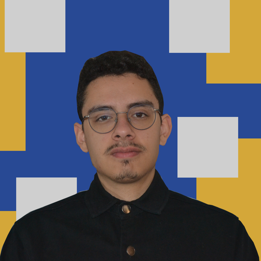

En vídeo
Último vídeo
@frelseisme en YouTube
Ver en YouTube →
Clases pensadas para personas tímidas o inseguras que quieren dejar de traducir en su cabeza y empezar a comunicarse de verdad. No es una academia más: es acompañamiento cercano, centrado en que te expreses con naturalidad.

Llevo años enseñando inglés, pero lo que de verdad marca la diferencia no es la gramática: es perder la vergüenza a hablar. Trabajo especialmente con personas tímidas o que se bloquean al hablar en público. Primero soltamos la voz — hablar en voz alta, equivocarse sin que pase nada, acostumbrarse a sonar distinto — y la corrección viene después.
El objetivo no es solo que "sepas" inglés, sino que lo uses con confianza: en una entrevista, una llamada, un viaje o una conversación cualquiera.
Las clases son por videollamada (Zoom o Google Meet), así que puedes conectarte desde donde estés, sin desplazamientos.
Cada clase se adapta a lo que necesitas practicar, con foco en la confianza tanto como en el idioma.
Nada de memorizar listas de verbos sin usarlos. Practicamos conversación real desde la primera sesión.
Si te bloqueas al hablar, buscamos juntos por qué pasa y cómo soltarte, con paciencia y sin juicios.
Entrevistas, presentaciones, viajes o el día a día: adaptamos las clases a lo que realmente vas a necesitar.
Preparamos respuestas claras y naturales para que no te quedes en blanco delante del entrevistador.
Practicamos el inglés que realmente usas en tu día a día profesional, no frases de manual.
Del "sé inglés en teoría" a poder desenvolverte de verdad en una tienda, un aeropuerto o con gente nueva.
Testimonios ilustrativos a modo de ejemplo — se actualizarán con opiniones reales de alumnos.
"Antes me bloqueaba en las reuniones en inglés. Ahora hablo sin pensar tanto en cada palabra."
"Las clases son muy cercanas, nunca me sentí juzgado por mis errores."
"Fui a mi entrevista en inglés mucho más tranquila gracias a la práctica previa."
Pagando con Monero, tienes un 20% de descuento.
Transferencia, PayPal u otros métodos. Escríbeme para confirmar cómo prefieres pagar.
Monero es mi método de pago principal. Envía el pago a esta dirección:
No. Adaptamos las clases a tu nivel real, desde quien tiene una base y quiere soltarse, hasta quien ya se defiende pero se bloquea al hablar.
Por videollamada (Zoom o Google Meet), individuales, centradas en conversación y en tus situaciones concretas.
Escríbeme por email o Telegram, cuadramos horario y te explico cómo hacer el pago.
Guía práctica con ejercicios concretos, no solo teoría.
Leer guía →